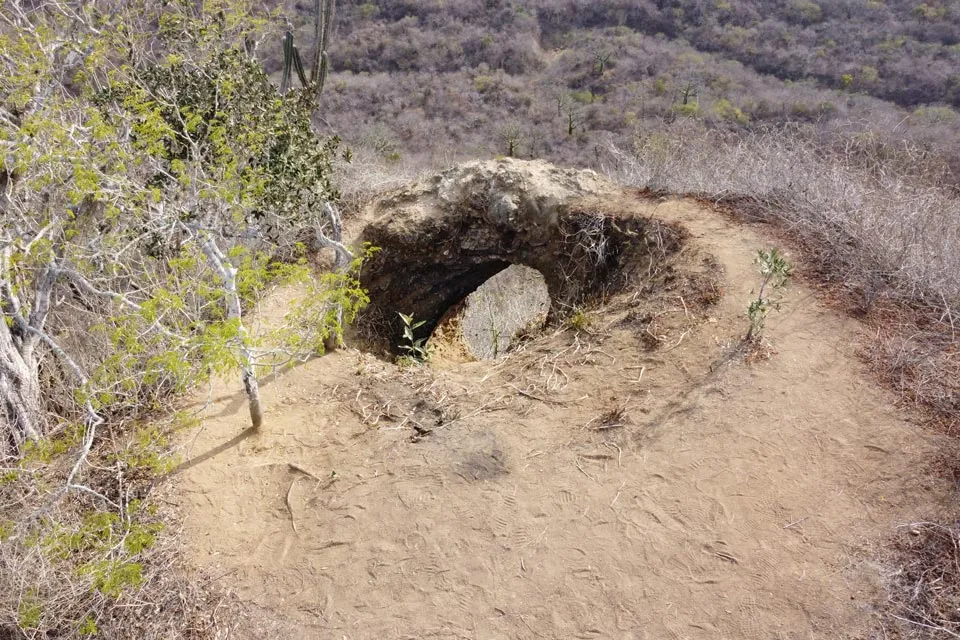

Es una comunidad ubicada en el canton Jipijapa provinvincia de Manabi-Ecuador. Se localiza en el km5 via a Puerto Cayo, aqui podras visitar las aguas azufradas el volcan invertido y senderos.
Ver ahoraLa comuna Joa además de las aguas azufradas nos ofrece una gran experiencia mediante sus senderos que conducen a la cima del volcán para disfrutar de su vegetación y hermosos paisajes.
De vez en cuando es importante darnos la oportunidad de explorar y conocer lugares con una vegetación, senderos y montañas que nos proporciona una conexión directa con la naturaleza, ayudando a nuestra la salud física y mental. Estas experiencias permiten desconectar de la rutina, ofrecen desafíos personales, y nos brindan un profundo sentimiento de victoria al conquistar cumbres o descubrir paisajes naturales únicos.
Además, la exploración de senderos y montañas motiva nuestra visión al momento enfrentar obstáculos naturales de gran desafío, fortalece el espíritu de comunidad entre los amantes de la naturaleza, y fomenta un respeto renovado por el entorno o medio ambiente que nos rodea.
Todo el Año!
Se recomienda vestimenta deportiva
febrero - septimbre temporada seca noviembre- enero lluvias moderadas
Duentes y seres espirituales